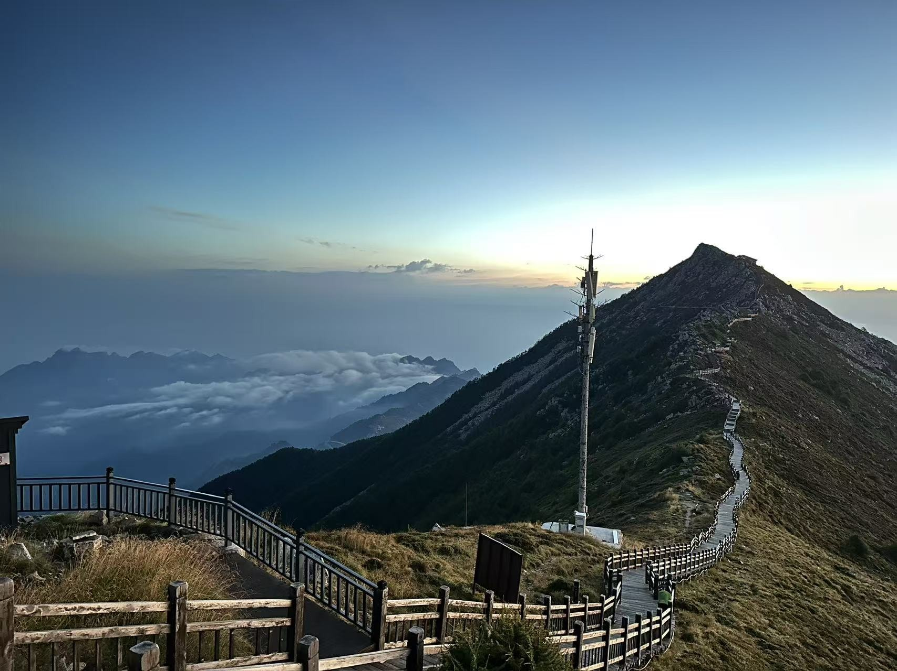

PLACES / MOUNTAINS / LITTLE MOMENTS
A little further.
A little higher.
City walks, coastlines and the next mountain.
A few places I carry with me.
THE TRAIL IS PART OF THE TRIP
I like taking
the way up.
I love hiking. I’ve climbed Changbai Mountain, Mount Hua, Jade Dragon Snow Mountain and Mount Qingcheng, as well as many lesser-known trails.
Fuqing, in Fujian, is my hometown. Manchester is my current base. In between are places across China, South Korea and the UK.
Places I’ve beenOpen the travel index ↗
Fujian · Home
Fuqing · Fuzhou · Xiamen
Liaoning
Dalian
Jiangsu
Nanjing · Suzhou
Zhejiang
Hangzhou
Shandong
Jinan · Qingdao · Weihai · Yantai
Guangdong
Shenzhen · Zhuhai · Guangzhou
Sichuan & Guizhou
Chengdu · Guiyang
Yunnan
Kunming · Lijiang · Shangri-La · Dali
Shaanxi
Xi’an · Yan’an
City chapters
Beijing · Shanghai · Chongqing
Hong Kong & Macau
Hong Kong · Macau
Other regions
Hebei · Inner Mongolia
South Korea
Busan · Jeju Island
United Kingdom
Manchester · Leeds · London · Sheffield
Some places are listed without photographs. Japan is still on my wishlist.
FROM MY ALBUM
Small moments.
Different horizons.
63 photographs · browse by place
Explore the places I have photographed. Hover over a point or choose a place below; each photograph opens in its full frame.
Drag the globe, select a city, or explore all locations below.